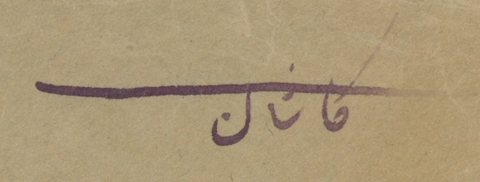
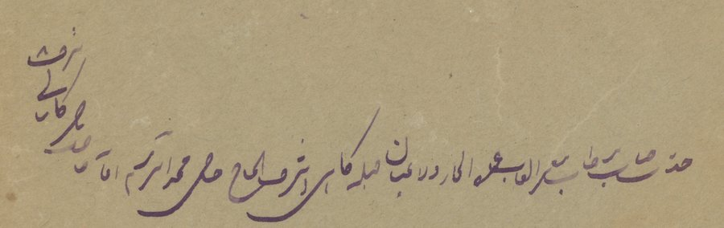
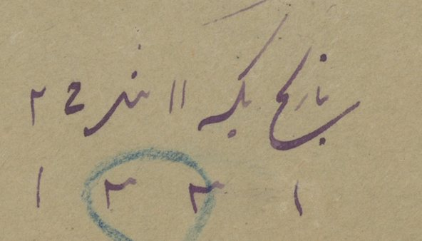
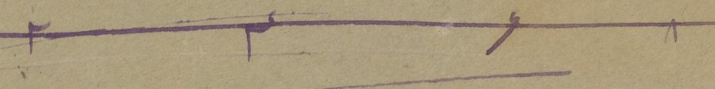
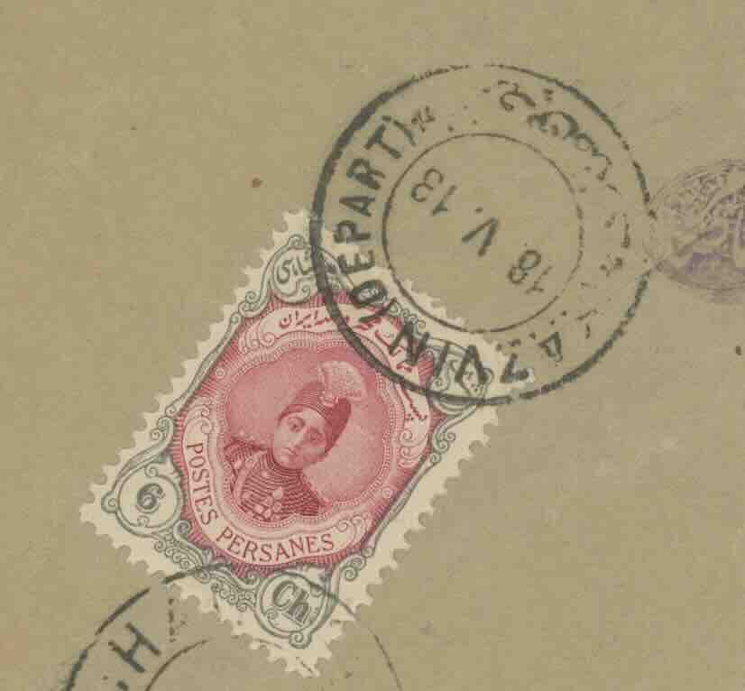
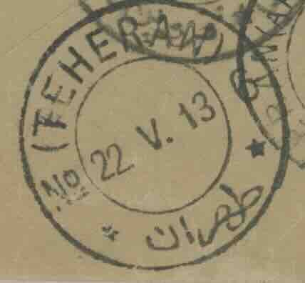
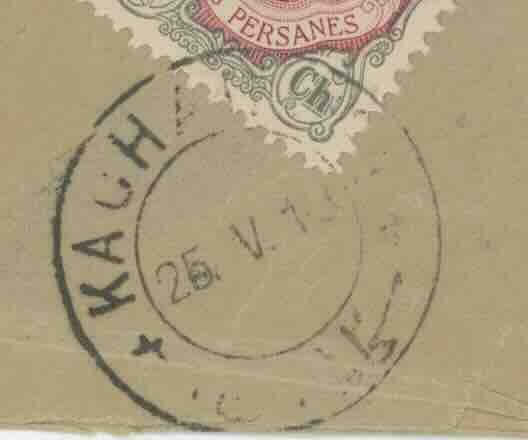

What can you find on a typical cover of Ahmad Shah era?
The rate for sending a cover to another city for the first 2 Miskal was 6ch for the whole era except a short period in 1921. Most covers fall into this weight class and have 6ch rate (more on rates here).
The Ahmad Shah portrait issue of 1911 was in use from 1911 until 1920. As such, the combination of the rate and the stamp used make the cover demonstrated below a very typical cover of this era.
Item 40034
On the front of the cover, you can usually find the name of the destination city and the name of the receiver. Usually, the date is also included in Hegira calendar as it was the most popular among common people due to its religious significance.







What other markings can you find on a cover?
Postbox
A Postbox (صندوق) marking indicates that the letter was dropped in a postbox. This marking is usually a small circle with the farsi letter "ص" in the middle.


Item 40179
Postage Due
A postage due marking is usually a small circle with English letter "T" in it. It indicate that the postage fee was not fully paid. Usually, the amount owed was paid by the receiver. In that era, some major merchants had accounts with the post office and in such circumstances, the post office would automatically withdraw what was owed from that account.
Internal cover with postage due marking
Item 40084
At times, the post office cancelled stamps for what was owed and tied that to the envelope.


A cover from Kerbala with postage due
Item 40138
Cover from Karbala to Tehran, franked with a 1909 1pi blue (Scott #154), cancelled with "Kerbala 19 0910" postmark. On arrival in Tehran, postage due marking and some instructions to collect the postage due was added to the cover by the postal clerk. The postage due was 1kr and got collected using 1kr Coat of Arms issue of 1909 which was tied to the cover with Tehran 1.X.10 postmark.
Postage Paid
The Ahmad Shah era was very chaotic and more often than not, post offices would run out of stamps. Despite no stamps being available the post offices continue their service by using a marking for showing the postage was paid.
Soltan Abad Bazar postage paid marking
Item 40122
Sometimes, post offices would combine the postage for several letters together and cancel the postage with a larger denomination in a separate sheet.
Cancelled in a separate sheet
Item 40070
registration
The registered coves needed to get tracked along the way to the destination. In order to uniquely identify a registered letter, the sender post office assign a unique id to the letter. To communicate this number with foreign post offices, it was common to use a registration marking.


Item 40163
Censorship and Control
Control Markings
According to Goodarzi in [Impact of Political events on the Postal History of Persia in the Late 19th and Early 20th Centries, 2023], the constitutional goverment imposed these censorship to monitor the communication of various armed groups. These control markings were used in various shapre and form in multiple cities.

Censorship Markings
Multiple military forces and authorities enforced monitoring of postal communications.